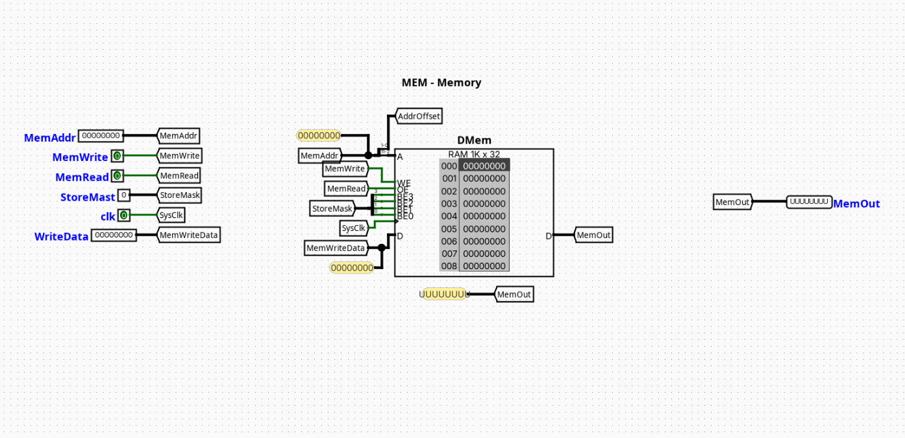
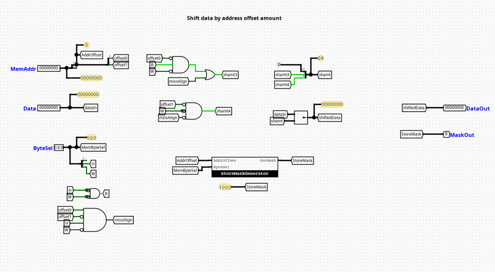
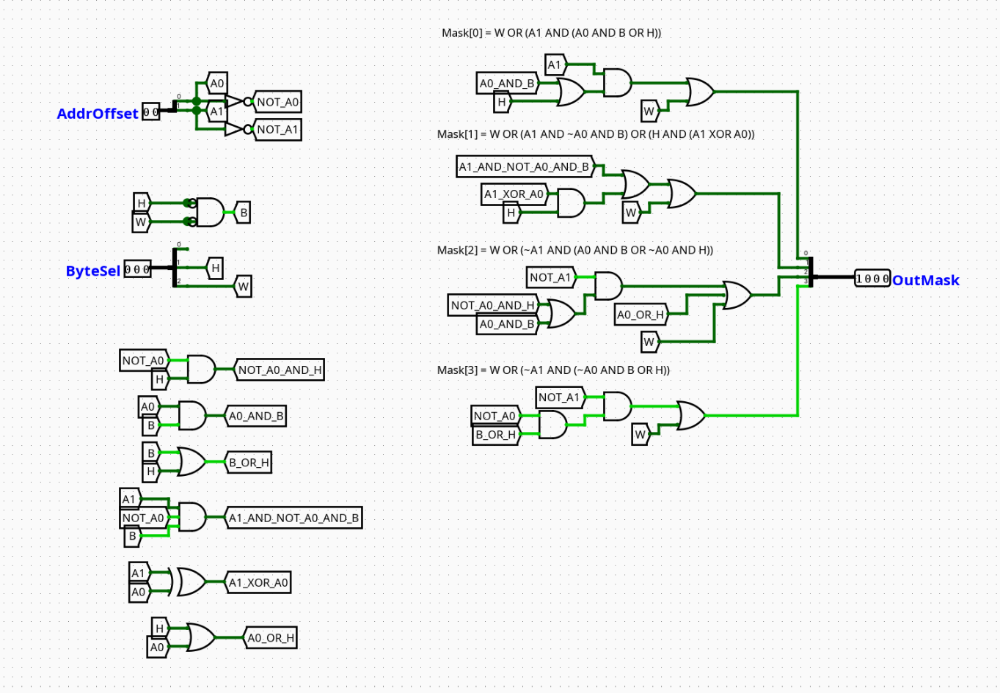
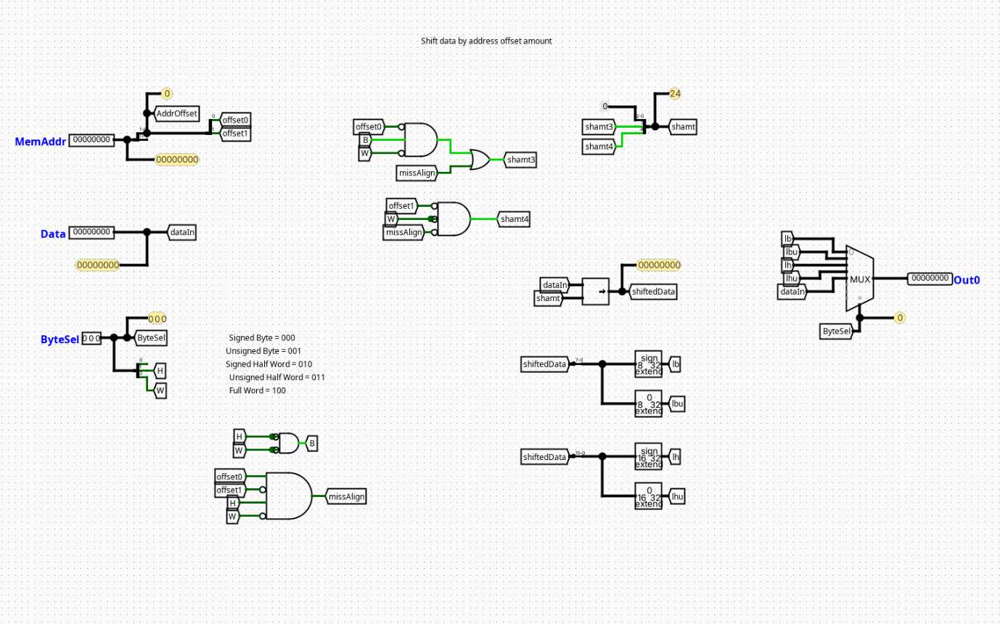

DMem
Overview
The DMem component acts as the unified Data Memory interface module for a pipelined RV32I processor. It encapsulates physical synchronous Random Access Memory (RAM) and supplements it with byte-alignment, masking, and sign-extension hardware networks. This allows the processor to natively execute word (lw), halfword (lh, lhu), and byte (lb, lbu) memory operations seamlessly.
- Purpose in CPU: Handles volatile data read and write preservation operations during program execution.
-
Role in datapath: Operates inside the Memory (MEM) pipeline stage, reading or writing data payloads based on addresses computed in the upstream Execution (EX) stage.
-
Source:
logisim/RiskVMemory.circ
Interface
Inputs
| Signal | Width | Description |
|---|---|---|
clk |
1 bit | Master system clock signal link for synchronizing write operations. |
MemWrite |
1 bit | Master write enable flag. When active, data is written into memory on the next clock edge. |
Addr |
32 bits | Raw 32-bit execution byte address calculated by the ALU. |
WData |
32 bits | Raw 32-bit source data word to be stored in memory. |
Func3 |
3 bits | Format specification vector derived directly from the instruction's funct3 bit field. |
Outputs
| Signal | Width | Description |
|---|---|---|
RData |
32 bits | Fully formatted and properly sign- or zero-extended 32-bit data word returned to the CPU datapath. |
Output Logic (Core Definition)
The configuration of top-level outputs and storage modifications are governed dynamically by the internal submodules based on address offsets and structural control configurations.
Rule-based definition
- Memory Addressing: Standardizes on word-aligned execution by routing
Addr[31:2]directly to the internal RAM cell address bus. - Data Write Path: When
MemWrite==1, the byte-enable pins of the RAM cell are modulated by the 4-bit block generated byMaskGenerator, whileStoreAlignershiftsWDatato line up with the target byte offsets. - Data Read Path:
RDatais continuously evaluated combinationally from the raw RAM output payload byLoadAlignerusingAddr[1:0]andFunc3.
Internal Design
The DMem module uses a modular architecture that separates write-side formatting, byte-mask generation, physical storage, and read-side extension into dedicated subcircuits.
- Structure: Core storage operates sequentially on the master clock edge, while formatting, steering, and bit-extension submodules operate entirely as combinational networks.
- Subcircuits Used:
StoreAligner: Aligns write payloads to specific byte channels.MaskGenerator: Generates byte-enabling vector configurations.LoadAligner: Filters and extends read data.- Top-Level Routing: The address bus is split;
Addr[31:2]is wired straight to the core RAM address lines, whileAddr[1:0]routes downstream to the alignment and mask-generation submodules to configure byte lanes.
Operation
Step-by-step behavior:
- Parameters Settle:
Addr,WData,Func3, andMemWriteland at the input ports. - Parallel Submodule Evaluation:
MaskGeneratorcreates the write mask,StoreAlignerrepositions the write word, and the RAM block combinationally outputs the 32-bit word located atAddr[31:2]. - Read Alignment:
LoadAlignerintercepts the raw RAM output, isolating and extending the correct sub-word based onAddr[1:0]andFunc3to deliver a stable value toRData. - Synchronous State Change: If
MemWriteis asserted, the masked and shifted write data commits to the RAM cells on the next active clock transition.
Pipeline Interaction
- Pipeline stage involvement: Operates entirely within the MEM (Memory Access) pipeline stage window.
- Signal propagation across stages: Accepts execution addresses directly from the EX/MEM pipeline registers and stabilizes the fully formatted read values (
RData) before the next clock edge latches them into the MEM/WB writeback registers. - Dependencies: Interlocks directly with data hazard mitigation architectures. Because memory operations take a full clock cycle to read from storage, any immediate dependent instruction down-line requires the central pipeline controller to introduce a structural stall cycle to preserve data consistency.
Examples
Example: Storing a Byte (e.g., sb x5, 2(x10))
Inputs:
Addr=0x10000006(Addr[1:0]=10)WData=0x11223344(Low byte to write =0x44)Func3=000(Byte mode)MemWrite=1
Submodule Actions:
StoreAlignershifts0x44to position 2, generating0x00440000.MaskGeneratoroutputs a 4-bit write mask of0100.- Result: On the clock edge, only byte lane 2 of the word address
0x10000004is updated with0x44.
Limitations / Assumptions
- Assumes memory access constraints match the natural size-alignment protocols dictated by standard RISC-V specifications. Unaligned memory accesses may trigger erroneous wrapping behavior if not isolated externally.
- Contains no exception tracking, misaligned memory trap hooks, or hardware-level bus parity checks.
- Purely dependent on stable clock transitions to handle structural operations without corrupting nearby data segments.
Implementation Notes (Logisim)
- Built cleanly using standard elements from Logisim's native
Memories(RAM),Plexers(Multiplexers), andWiringpackages. - Configured with a unified local tunnel system to cleanly distribute address byte slices (
Addr[1:0]) and format controls without visual clutter.
Submodules
StoreAligner
Overview
A combinational steering network that shifts lower-order bits from the source register to align them with the target byte coordinates within the 32-bit memory word.
- Source:
logisim/RiskVMemory.circ
Interface
- Inputs:
WData(32 bits),Addr_LSB(2 bits, trackingAddr[1:0]) - Outputs:
Aligned_WData(32 bits)
Logic Definition
- If
Addr_LSB==00→Aligned_WData=WData - If
Addr_LSB==01→Aligned_WData=WData[23:0] << 8(Low byte moved to Byte 1) - If
Addr_LSB==10→Aligned_WData=WData[15:0] << 16(Low half/byte moved to Byte 2) - If
Addr_LSB==11→Aligned_WData=WData[7:0] << 24(Low byte moved to Byte 3)
MaskGenerator
Overview
An operational decoding matrix that translates the instruction size code (Func3) and address offsets into a 4-bit byte-enable vector used to gate RAM write transactions.
- Source:
logisim/RiskVMemory.circ
Interface
- Inputs:
Func3(3 bits),Addr_LSB(2 bits, trackingAddr[1:0]) - Outputs:
Write_Mask(4 bits, mapped directly to RAM byte-enables)
Logic Definition
- Byte Mode (
Func3==000): Addr_LSB==00→Write_Mask=0001Addr_LSB==01→Write_Mask=0010Addr_LSB==10→Write_Mask=0100Addr_LSB==11→Write_Mask=1000- Halfword Mode (
Func3==001): Addr_LSB==00→Write_Mask=0011Addr_LSB==10→Write_Mask=1100- Word Mode (
Func3==010): Write_Mask=1111- Default/Other Modes:
Write_Mask=0000
LoadAligner
Overview
An extraction and sign-extension framework that captures sub-word selections from memory and formats them into standardized 32-bit integers.
- Source:
logisim/RiskVMemory.circ
Interface
- Inputs:
RAM_DataOut(32 bits),Addr_LSB(2 bits, trackingAddr[1:0]),Func3(3 bits) - Outputs:
RData(32 bits)
Logic Definition
Extracts and pads values based on the active memory format configuration:
Func3==000(Byte Load -lb):Addr_LSB==00→RData={{24{RAM_DataOut[7]}}, RAM_DataOut[7:0]}Addr_LSB==01→RData={{24{RAM_DataOut[15]}}, RAM_DataOut[15:8]}Addr_LSB==10→RData={{24{RAM_DataOut[23]}}, RAM_DataOut[23:16]}Addr_LSB==11→RData={{24{RAM_DataOut[31]}}, RAM_DataOut[31:24]}Func3==001(Halfword Load -lh):Addr_LSB==00→RData={{16{RAM_DataOut[15]}}, RAM_DataOut[15:0]}Addr_LSB==10→RData={{16{RAM_DataOut[31]}}, RAM_DataOut[31:16]}Func3==010(Word Load -lw):RData=RAM_DataOutFunc3==100(Byte Load Unsigned -lbu):Addr_LSB==00→RData={24'b0, RAM_DataOut[7:0]}Addr_LSB==01→RData={24'b0, RAM_DataOut[15:8]}Addr_LSB==10→RData={24'b0, RAM_DataOut[23:16]}Addr_LSB==11→RData={24'b0, RAM_DataOut[31:24]}Func3==101(Halfword Load Unsigned -lhu):Addr_LSB==00→RData={16'b0, RAM_DataOut[15:0]}Addr_LSB==10→RData={16'b0, RAM_DataOut[31:16]}